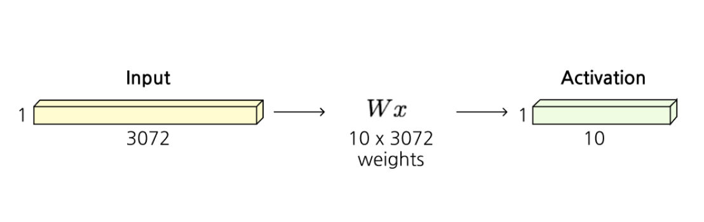
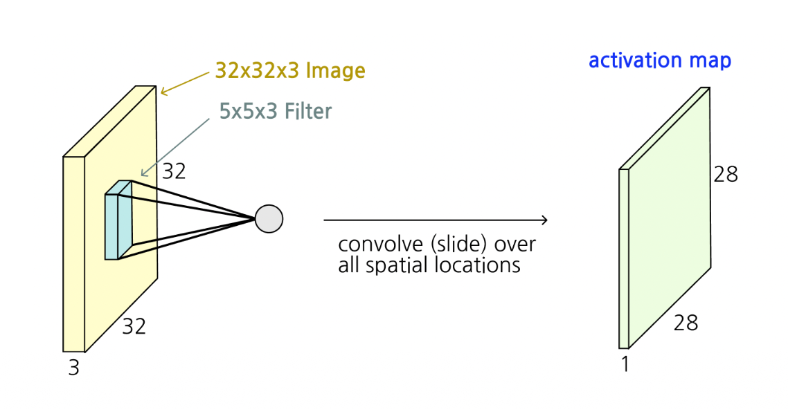
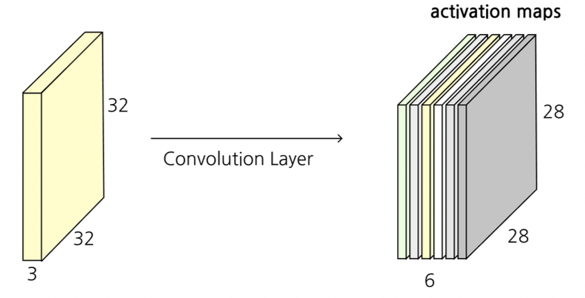
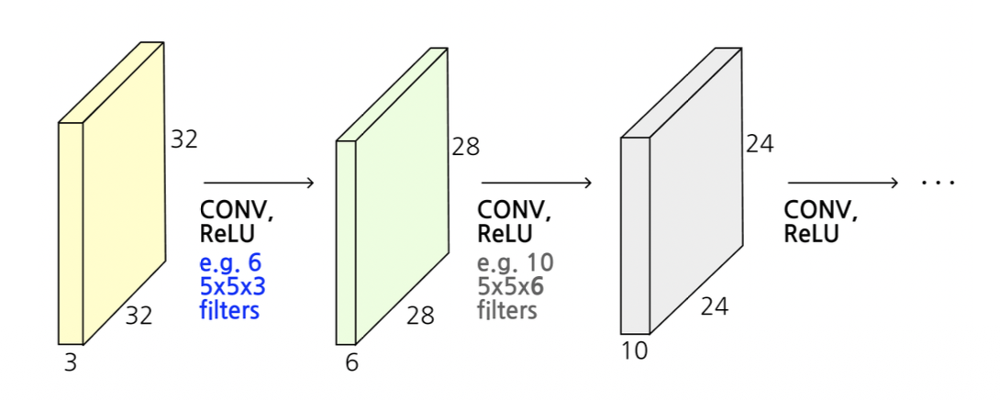

1. Introduction: Fully Connected Layer의 한계와 CNN의 등장
이전 포스트에서는 신경망의 기본적인 구조와 보편적 근사 정리(UAT)에 대해 다루었습니다. 전통적인 인공 신경망인 완전 연결 계층(Fully Connected Layer, FC Layer)은 이미지를 처리할 때 치명적인 한계를 가집니다.
예를 들어, 가로 32, 세로 32 픽셀의 RGB 색상 채널 3개를 가진 이미지(\(32 \times 32 \times 3\))를 FC Layer에 입력한다고 가정해 봅시다. FC Layer는 2차원(또는 3차원)의 공간 정보를 무시하고, 모든 픽셀을 1차원 벡터로 길게 펼칩니다(Stretch). 결과적으로 \(3072 \times 1\) 크기의 길다란 벡터가 만들어집니다.

- 이 입력 벡터가 10개의 클래스(출력)를 분류하기 위해 하나의 은닉층을 거칠 경우, 가중치 행렬 \(W\)의 크기는 \(10 \times 3072\)가 되어 무려 30,720개의 파라미터가 필요해집니다.
- 이는 두 가지 큰 문제를 야기합니다.
- 공간적 구조(Spatial structures) 파괴: 이미지에서 인접한 픽셀들은 서로 강한 상관관계를 가지지만, 1차원으로 펼치면 이러한 지역적(local) 특성이 사라집니다.
- 과도한 파라미터 수: 입력 크기가 커지면 가중치의 수가 기하급수적으로 늘어나 모델이 과적합(Overfitting)되기 쉽고, 연산량이 폭발적으로 증가합니다.
- 이러한 문제를 해결하기 위해 등장한 것이 바로 가중치 공유(Weight sharing)를 통해 파라미터 수를 획기적으로 줄이고, 이미지의 공간적 구조를 그대로 보존하는 합성곱 신경망(Convolutional Neural Network, CNN)입니다.
2. Convolution Layer의 동작 원리
- Convolution Layer(합성곱 계층)의 가장 큰 특징은 입력 데이터의 공간적 형태(\(32 \times 32 \times 3\))를 유지한 상태에서, 작은 크기의 필터(Filter, 가중치)를 사용하여 국소적인 영역의 특징을 추출한다는 것입니다.
2.1. 필터(Filter)와 합성곱 연산

가령 \(5 \times 5 \times 3\) 크기의 필터 \(w\)가 주어졌다고 해봅시다. 필터의 깊이(Depth)는 항상 입력 이미지의 깊이(채널 수, 여기서는 3)와 동일해야 합니다. 이 필터는 이미지의 좌측 상단부터 시작하여 전체 공간을 미끄러지듯 이동(Slide over the image spatially)하며 점곱(Dot product) 연산을 수행합니다.
필터가 덮고 있는 \(5 \times 5 \times 3\) 크기의 작은 이미지 조각 \(x\)와 필터 가중치 \(w\) 간의 연산은 수식으로 다음과 같이 표현됩니다.
\[w^T x + b\]
- 이 연산은 75 차원(\(5 \times 5 \times 3 = 75\))의 벡터 간 내적을 수행한 후 하나의 편향(Bias, \(b\))을 더하여 단 1개의 숫자(스칼라 값)를 만들어냅니다.
2.2. Activation Map 생성과 다중 필터
- 이 필터를 이미지의 처음부터 끝까지 모두 슬라이딩시키면, 결과적으로 2차원 형태의 활성화 지도(Activation Map)가 생성됩니다. (원본 32x32 크기에서 5x5 필터를 움직이면 가장자리가 줄어들어 28x28 크기가 됩니다.)


- 실제 CNN에서는 하나의 계층에서 다양한 패턴(예: 가로 엣지, 세로 엣지, 색상 대비 등)을 추출하기 위해 여러 개의 독립적인 필터를 사용합니다.
- 만약 6개의 서로 다른 \(5 \times 5 \times 3\) 필터를 사용한다면, 결과적으로 6장의 28x28 Activation Map이 만들어집니다. 우리는 이를 차곡차곡 쌓아 올려(Stack) \(28 \times 28 \times 6\) 크기의 새로운 3차원 볼륨(New image)을 얻게 됩니다.
- 이후 비선형성을 부여하기 위해 활성화 함수 ReLU(\(\max(0, \cdot)\))를 통과시키며, 여러 Convolution Layer를 직렬로 연결(CONV \(\rightarrow\) ReLU \(\rightarrow\) CONV \(\rightarrow\) ReLU)하여 층을 깊게 쌓아갑니다.
3. 주요 하이퍼파라미터 (Hyperparameters)
- Convolution Layer의 출력 크기와 모델의 용량을 결정짓는 핵심 하이퍼파라미터는 다음과 같습니다.
- 필터의 수 (Number of filters):
- 우리가 몇 개의 필터를 사용할 것인지를 결정합니다.
- 이 개수는 곧 출력 볼륨의 깊이(Depth)와 동일한 활성화 지도(Activation maps)의 개수가 됩니다.
- 스트라이드 (Stride):
- 필터가 한 번에 공간적으로 몇 픽셀씩 이동할지 결정하는 보폭입니다.
- Stride가 1이면 1픽셀씩 촘촘히 이동하고, Stride가 2이면 2픽셀씩 건너뛰며 이동합니다.
- Stride를 키울수록 필터가 찍는 횟수가 줄어들어 출력 볼륨의 공간적 크기(가로, 세로)가 작아집니다.
- 제로 패딩 (Zero-padding):
- 입력 이미지의 가장자리에 0으로 채워진 테두리를 덧대는 기법입니다.
- 필터를 씌우면 출력 크기가 작아지는 현상을 방지하고, 출력 볼륨의 공간적 크기를 입력과 동일하게 유지하거나 원하는 크기로 제어할 수 있게 해주는 아주 유용한 기능입니다.
4. 연산 과정 구체화 (Step-by-Step Example)
패딩과 스트라이드가 어떻게 연산에 적용되는지 구체적인 3D 텐서 연산 예시를 통해 살펴보겠습니다.
입력(Input): 원래 \(5 \times 5 \times 3\) 크기의 볼륨 가장자리에 패딩(pad=1)을 둘러서 \(7 \times 7 \times 3\) 크기의 입력이 되었습니다. (가장자리의 0들이 패딩입니다.)
필터(Filters): 2개의 필터(\(W_0, W_1\))를 사용합니다. 각 필터의 크기는 \(3 \times 3 \times 3\)이며, 각각 고유한 편향 \(b_0=1\), \(b_1=0\)을 가집니다. (num_filters = 2)
보폭(Stride): 2 픽셀씩 건너뜁니다. (stride = 2)

- 계산 원리
- 첫 번째 필터 \(W_0\)를 입력의 제일 왼쪽 상단(녹색 테두리로 표시된 \(3 \times 3 \times 3\) 영역)에 위치시킵니다.
- 입력 볼륨의 선택된 \(3 \times 3 \times 3\) 영역에 있는 숫자들과 필터 \(W_0\)에 적힌 가중치 숫자들을 각각 같은 위치끼리(element-wise) 곱합니다.
- 그 곱한 27개(\(3 \times 3 \times 3\))의 결과값들을 모두 더합니다.
- 마지막에 편향 \(b_0=1\)을 더합니다.
- 이 연산의 결과로 Output Volume 첫 번째 채널의 맨 위쪽 첫 번째 픽셀 값(예: 2, 10, 6 등)이 채워집니다.
- 이후 필터는 Stride=2 규칙에 따라 오른쪽으로 2칸씩 껑충 뛰어 이동하며 똑같은 연산을 반복하고, 한 줄이 끝나면 아래로 2칸 내려와 이동합니다. 그 결과 공간적 크기는 \(3 \times 3\)으로 축소되며, 2개의 필터를 썼으므로 깊이는 2가 되어 최종적으로 \(3 \times 3 \times 2\) 크기의 Output Volume이 생성됩니다.
5. 공간 크기 및 파라미터 수 계산 연습 (Exercises)
- 강의 자료에 등장하는 두 가지 핵심 예제(Example)를 통해, 수식을 어떻게 적용하는지 알아보겠습니다.
- 출력 볼륨의 가로(또는 세로) 길이 \(O\)는 입력 크기 \(W\), 필터 크기 \(F\), 패딩 크기 \(P\), 스트라이드 \(S\)에 대해 다음과 같은 공식으로 계산할 수 있습니다.
\[O = \frac{W - F + 2P}{S} + 1\]
Example 1: 출력 활성화 맵 크기(Output activation size) 계산
- 조건: Input volume은 \(32 \times 32 \times 3\). 10개의 \(5 \times 5\) 필터 적용. (Stride = 1, Padding = 2)
- 공식 대입: \(W = 32, F = 5, P = 2, S = 1\) \[O = \frac{32 - 5 + 2 \times 2}{1} + 1 = \frac{32 - 5 + 4}{1} + 1 = 31 + 1 = 32\]
- 결과: 가로와 세로는 32로 원본과 똑같이 유지됩니다. 사용한 필터의 수가 10개이므로 깊이는 10이 됩니다.
- 최종 Output Volume 크기: \(32 \times 32 \times 10\)
Example 2: 파라미터 수(Number of parameters) 계산
파라미터 수는 입력의 공간적 크기(\(32 \times 32\))와는 무관하게, 오직 필터의 크기와 개수에 의해서만 결정되는 가중치 공유(Weight sharing)의 마법을 보여줍니다.
조건: Example 1과 동일. (입력 깊이 \(C_{in}=3\), 필터 공간 크기 \(5 \times 5\), 필터 개수 10개)
단일 필터의 파라미터 수: 각 필터는 채널 깊이만큼 존재하므로 \(5 \times 5 \times 3 = 75\)개의 가중치를 가지며, 여기에 1개의 편향(Bias)이 추가됩니다. \[75 + 1 = 76 \text{ parameters per filter}\]
전체 파라미터 수: 이 필터가 총 10개 있으므로, 해당 계층에서 학습해야 할 총 파라미터 수는 다음과 같습니다. \[76 \times 10 = \mathbf{760}\]
FC Layer가 앞선 Introduction에서 30,720개의 가중치가 필요했던 반면, CNN은 단 760개의 파라미터만으로 깊이 있는 특성 추출을 수행할 수 있습니다.